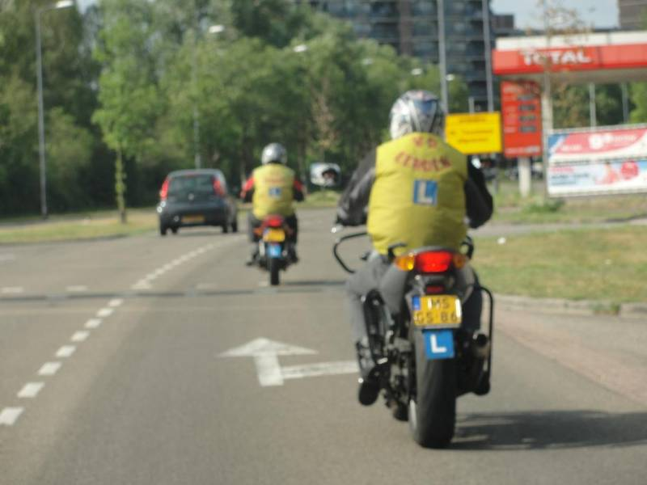
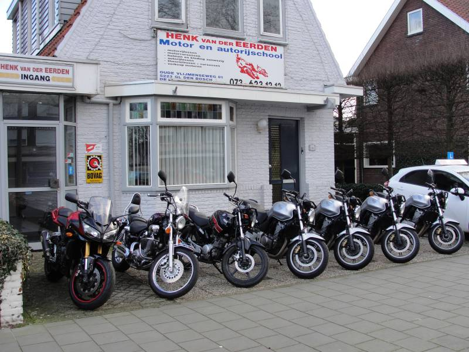

Zes jaar circuitracen
Henk racete zes jaar op circuits in de Benelux. Hij weet dus precies wat een motor doet — en hoe hij jou de controle geeft, ook als het spannend wordt.
Motorrijschool · Den Bosch · al 25 jaar
Het 3-uursblok
Een les van vijftig minuten? Tegen de tijd dat je warmgereden bent, sta je alweer thuis. Henk werkt daarom in blokken van drie uur: echte afstanden, echte verkeerssituaties en halverwege koffie — met persoonlijke feedback waar je wat aan hebt.
Waarom Henk
Er zijn rijscholen die je in twee dagen door het examen jassen. Henk doet het anders: hij leert je het waarom, wanneer en hoe van motorrijden in het verkeer. Het examen? Dat haal je onderweg, en meestal in één keer.

Henk racete zes jaar op circuits in de Benelux. Hij weet dus precies wat een motor doet — en hoe hij jou de controle geeft, ook als het spannend wordt.
Helm, handschoenen, laarzen én motorkleding hangen voor je klaar. Niets zelf kopen voordat je weet of motorrijden iets voor je is.
Henk stuurt je pas op examen als je er klaar voor bent. Daarom slaagt 96 tot 100% van zijn leerlingen in één of twee keer.
“Ik lever geen geslaagden af. Ik lever motorrijders af. Dat papiertje komt vanzelf.”
Henk van der Eerden
De vloot
Je rijdt op de Honda CBF 600 F ABS of de CBF 600 in A2-uitvoering: motoren die vergevingsgezind genoeg zijn om op te leren en krachtig genoeg om écht te rijden. Onderhouden door iemand die er zelf dagelijks op zit.

Wat leerlingen zeggen
“Henk is direct in zijn feedback, en dat moet je liggen — maar daardoor leer je wel echt motorrijden in plaats van alleen je examen halen. In blokken van 3 uur maak je effectief veel kilometers.”
“Heerlijk direct en recht door zee, ontzettend professioneel. Vol zelfvertrouwen mijn examens ingegaan en allemaal de eerste keer gehaald. Wil je écht goed leren rijden, kies dan voor Henk!”
“Na een gezakt AVD-examen bij een andere rijschool gaf Henk me inzicht in het waarom, wanneer en hoe van motorrijden. Tweede examen: vol zelfvertrouwen gehaald. De lessen van 3 uur vliegen voorbij.”
Bel Henk voor een eerlijke intake, of plan je eerste blok van drie uur. Helm en kleding liggen klaar — jij hoeft alleen te komen.